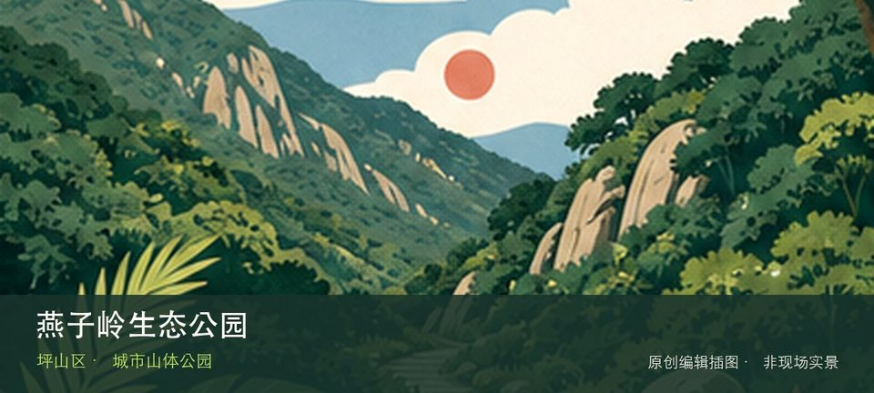

适合谁
适合有基础步行体力、愿意按天气调整路线的人；行动不便者应只选择平缓开放段。

SHENZHEN GUIDE · 253
坪山大工业区荔景路至龙坪路 · 城市山体公园
燕子岭生态公园位于坪山大工业区荔景路至龙坪路，约62公顷山体绿地在产业城区中提供林下登山、草坡和远眺空间，是坪山中心区的快速自然入口。若只匆匆经过容易错过重点，燕子岭山体步道与坪山产业城区视野恰好构成最有辨识度的观察顺序。现场不必追求一次走完，先在燕子岭山体步道与坪山产业城区视野之间确定主线，再按体力、日照和天气保留折返方案。山地、滨水或林下路面会随降雨改变，当天预警和开放边界始终比旧轨迹更优先。
WHY GO
适合有基础步行体力、愿意按天气调整路线的人；行动不便者应只选择平缓开放段。
第一次到燕子岭生态公园先把燕子岭山体步道设为主目标，再视天气和现场边界决定是否前往坪山产业城区视野；返程节点应在出发前确定。
公共交通先到坪山大工业区荔景路至龙坪路片区，再以燕子岭生态公园公开参观入口为终点；多入口地点须按计划游线选择入口，并预先锁定返程站点。
导航至燕子岭生态公园官方开放入口配套或邻近正规公共停车场；周末满位即改乘公共交通，不在绿道口、村道或消防通道临停。
10 月至次年 4 月较舒适；4—9 月湿热且雷雨集中，强降雨前后不进入山脊、溪谷、陡坡或低洼路段。
NEARBY IDEAS
 用户提供·建筑实景
用户提供·建筑实景
深圳自然博物馆位于坪山区马峦街道沙坣社区的燕子湖片区，八大主题展厅从宇宙、地球、演化、恐龙、人类、生物、生态一路讲到深圳家园，把自然史、标本和本地山海放进一座新公共文化建筑。
 编辑配图·非现场实景
编辑配图·非现场实景
坪山中心公园位于坪山中心区，行政文化建筑、水景和开阔步行空间形成新区公共客厅，适合与文化聚落串联而非单独追求大型游乐设施。
 编辑配图·非现场实景
编辑配图·非现场实景
深圳市坪山区东江纵队纪念馆位于坪山老街片区，旧址、文献与战争时期群众动员共同讲述东江纵队历史，是连接坪山地方社会与华南抗战的重要节点。